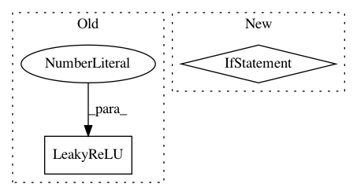

61228f3243eaee39cba31a9abd2afc6ead9612a8,implementations/cyclegan/models.py,UNetDown,__init__,#UNetDown#Any#Any#Any#Any#,10
Before Change
def __init__(self, in_size, out_size, bn=True, dropout=0.0):
super(UNetDown, self).__init__()
model = [ nn.Conv2d(in_size, out_size, 3, stride=2, padding=1),
nn.LeakyReLU(0.2, inplace=True) ]
if bn:
model += [nn.InstanceNorm2d(out_size)]
After Change
conv_block = [ nn.ReflectionPad2d(1),
nn.Conv2d(in_features, in_features, 3),
nn.InstanceNorm2d(in_features),
nn.ReLU(inplace=True),
nn.ReflectionPad2d(1),
nn.Conv2d(in_features, in_features, 3),
nn.InstanceNorm2d(in_features) ]
In pattern: SUPERPATTERN
Frequency: 4
Non-data size: 2
Instances
Project Name: eriklindernoren/PyTorch-GAN
Commit Name: 61228f3243eaee39cba31a9abd2afc6ead9612a8
Time: 2018-05-04
Author: eriklindernoren@gmail.com
File Name: implementations/cyclegan/models.py
Class Name: UNetDown
Method Name: __init__
Project Name: Zhaoyi-Yan/Shift-Net_pytorch
Commit Name: dc9aafd83851f7c55c6fe61702e281856ec023ca
Time: 2018-12-13
Author: yanzhaoyi@outlook.com
File Name: models/modules/shift_unet.py
Class Name: InceptionUnetSkipConnectionBlock
Method Name: __init__
Project Name: osmr/imgclsmob
Commit Name: 00c06ff2b04c3c991b6fbe1281ff3eede9ca4f94
Time: 2018-10-29
Author: osemery@gmail.com
File Name: gluon/gluoncv2/models/darknet.py
Class Name: DarkNet
Method Name: __init__
Project Name: osmr/imgclsmob
Commit Name: 8d09be67f6fa89ac357640c688ed70f4f719173f
Time: 2019-01-03
Author: osemery@gmail.com
File Name: gluon/gluoncv2/models/common.py
Class Name: ConvBlock
Method Name: __init__